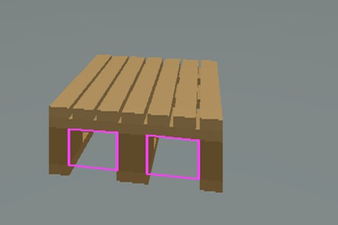
팔레트 인식
D435i · 규격 치수 기반
확인포켓 위치 · 방향
소프트웨어시뮬레이션

D435i · 규격 치수 기반
확인포켓 위치 · 방향
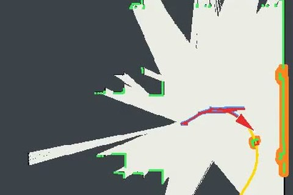
SLAM · 점유 격자
확인신규 장애물 재계획
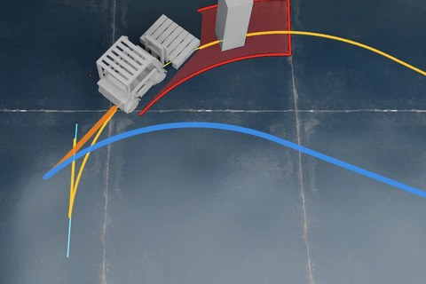
Hybrid A* (전 · 후진)
확인A–D
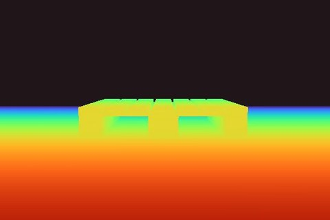
캐리지 하단 카메라
확인무접촉 삽입
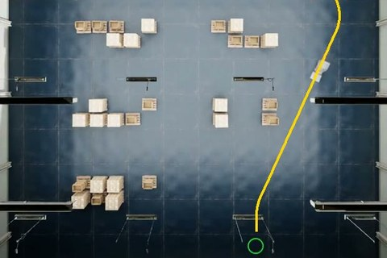
인식 → 하역 단일 임무
확인임무 완주
하드웨어실차
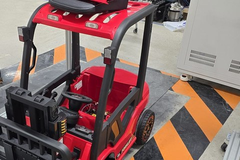
최대 조향각 15°
완료
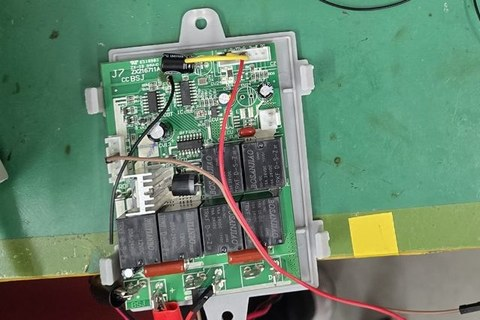
릴레이 On/Off 구동
완료
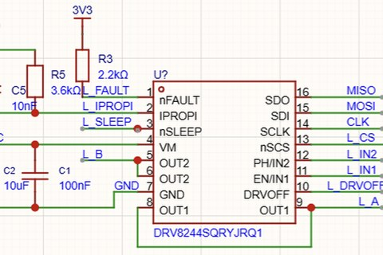
DRV8244 · MT6701
설계 중
D435i · A2M12 보유
예정
구동 보드 제작 후 A부터
예정
임무 흐름 (삽입 중 추적 미적용 실행)
위치 추정전 구간에서 휠 오도메트리를 SLAM으로 보정
| 항목 | 실기시험 (실제 지게차) | 개발 차량 (시뮬레이션) |
|---|---|---|
| 하역 위치 | 20 cm 넘게 어긋나면 실격 | 하역 오차 최대 2.9 cm |
| 포크 삽입 | 20 cm 넘게 덜 넣으면 실격 | 덜 넣은 거리 최대 3.7 cm |
| 운반 중 포크 높이 | 20–30 cm 유지, 50 cm 넘으면 실격 | 포크 중심 20.5 cm |
| 낙하 · 밀림 | 낙하하거나 밀면 실격 | 낙하 · 밀림 없음 |
| 틸트 | 마스트를 기울여 운반 | 틸트 기구 없음 |
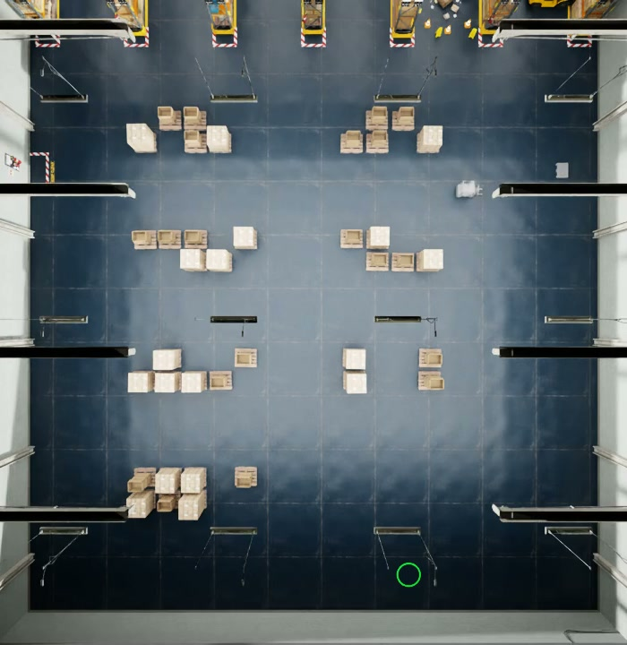
설정과 근거
| 항목 | 값 | 근거 |
|---|---|---|
| 차체 | 실측 축거 · 바퀴 · 조향각 | 실측 5주차 실측 (외형 · 질량은 카탈로그) |
| 물리 | Isaac Sim 5.1 · 120 Hz | 구현 바퀴 토크 구동 · 팔레트 물리 적재 |
| LiDAR | A2M12 1,600점 · 10 Hz | 규격·사양 카탈로그 사양 |
| 깊이 카메라 | 640 × 480 · 화각 69° | 가정 D435i 컬러 화각 기준 |
| SLAM 연동 | ROS 2 slam_toolbox | 구현 스캔 송신 → SLAM 응답 후 진행 |
| 바닥 장애물 | LiDAR 높이 (1.05 m) 이상 | 가정 운용 가정 · 저상 소품 제외 |
| 마찰 · 토크 | 마찰 계수 0.8 / 0.7 · 3 N·m | 가정 일반 범위 값 · 실측 후 교체 |
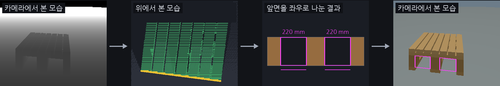
선정 근거
| 이유 | 설명 |
|---|---|
| 학습 데이터 불필요 | 팔레트 규격 치수만 입력, 치수를 바꾸면 EPAL 6과 T11 모두 인식 |
| 시뮬레이션 시험 | 2–4 m 앞 EPAL 6 팔레트 60개를 모두 찾고, 위치 오차는 95 %가 1 cm 미만 |
구현 단계 (포크 끝–팔레트 앞면 거리)
① 영상 지연 보정
② 연속 추적
③ 경로 보정
④ 간격 감시
⑤ 삽입 완료
구현 (현재 설정)
| 항목 | 구현 |
|---|---|
| 차량 모델 | 자전거 모델 · 계획 회전 반경 3.45 m |
| 탐색 | 0.2 m · 10° 격자 · 호 길이 0.25 m |
| 충돌 검사 | 차체 + 적재물 사각형 · 여유 0.1 m |
| 목표 연결 | Reeds–Shepp (전 · 후진) |
| 추종 | 뒤차축 기준 pure pursuit |
| 장애물 | LiDAR 점유 격자 · 정지 궤적 검사 |
| 재계획 | 정지 위치에서 경로 재생성 (후진 포함) |
후진을 고른 근거
| 항목 | 내용 |
|---|---|
| 상자 위치 | 정지 위치에서 앞 2.0 m, 오른쪽 0.6 m |
| 기존 경로 | 최소 회전 반경에 가깝지만 상자 위를 지남 |
| 선회 영역 | 최소 회전 반경으로 돌아도 상자에 걸림 |
| 선택 | 1.75 m 후진한 뒤 선회해 회피 |
| 방향 맞추기 | 목적지 앞에서 전진만 21.7 m, 앞뒤로 1.0 m |
A 정면 정렬1.15 m 전진 → 삽입
B 측방 오프셋S자 곡선 2.3 m → 재관측 → 삽입
전진 경로후진 경로
C 근접1.3 m 후진 → 1.5 m 전진 정렬 → 삽입
D 근접 · 장애물전 · 후진 4회 정렬 → 삽입
전진 경로후진 경로
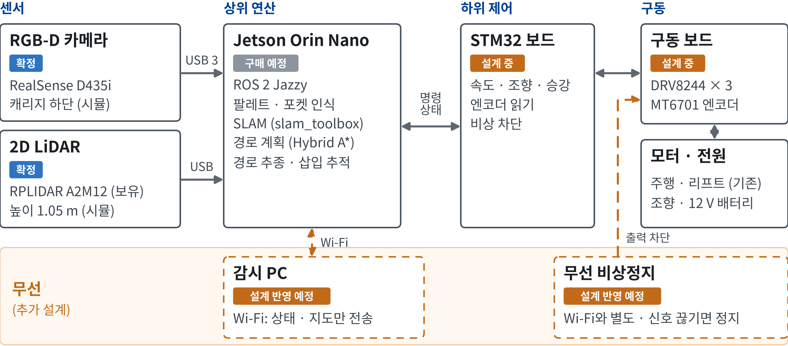
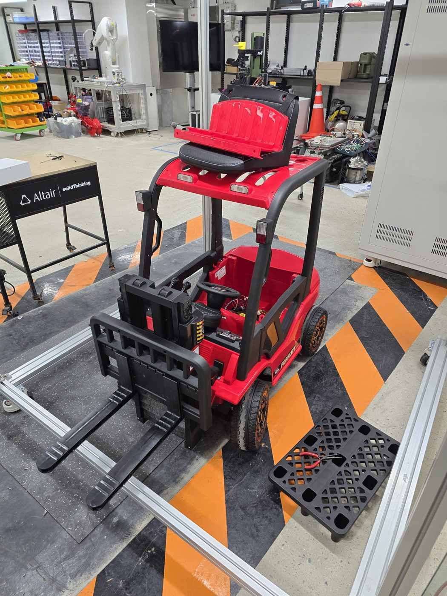
실측 결과
| 항목 | 실측 | 비교 · 영향 |
|---|---|---|
| 최대 조향각 | 15° | 사진 추정 대비 회전 반경 1.9배 |
| 축거 · 윤거 · 바퀴 반경 | 0.66 · 0.53 · 0.125 m | 사진 추정 대비 1–2 cm 차이 |
| 포크 길이 · 폭 · 두께 | 36 · 5.5 · 2.5 cm | EPAL 6 삽입 목표 33 cm (계산) |
| 포크 간격 | 5.5–38 cm 조절 | 팔레트 받침목 간격에 맞춤 |
| 외형 · 질량 | 1.46 × 0.63 × 1.01 m · 24 kg | 카탈로그 값과 일치 |
| 최대 적재 하중 | 10 kg (카탈로그) | 시뮬레이션 팔레트 질량과 같음 |
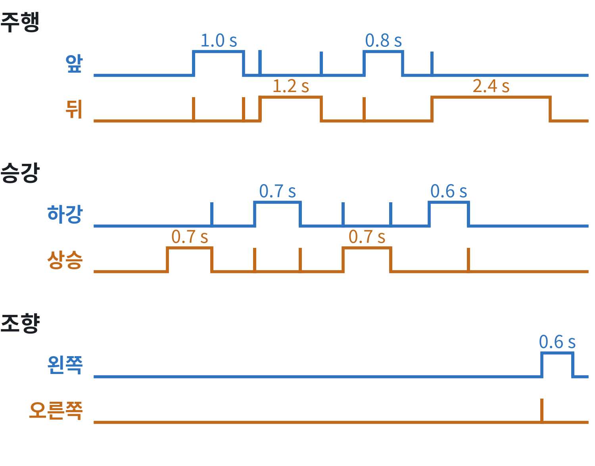
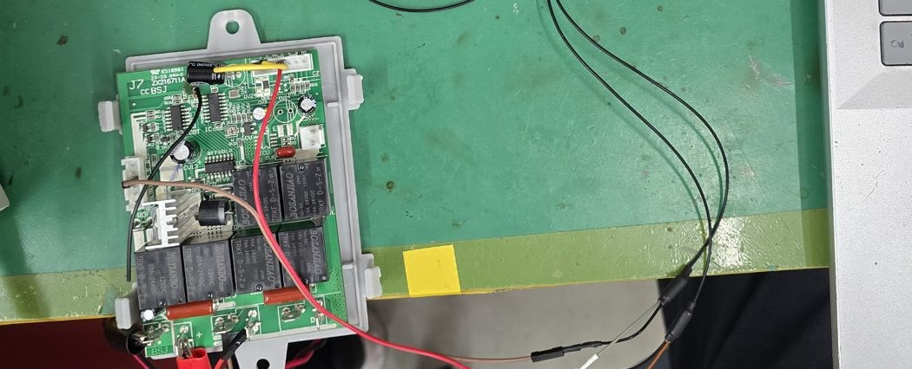
| 대상 | 관측 | 판단 |
|---|---|---|
| 신호 | 입력 동안 High 유지 | PWM 아님 |
| 모터 구동 | 릴레이 On/Off · 방향 전환 | 속도 제어 불가 |
| 무선 수신 | 메인보드 통합형 | 미사용 |
| 재사용 | 전원 스위치 · 주행 · 리프트 모터 | 그대로 사용 |
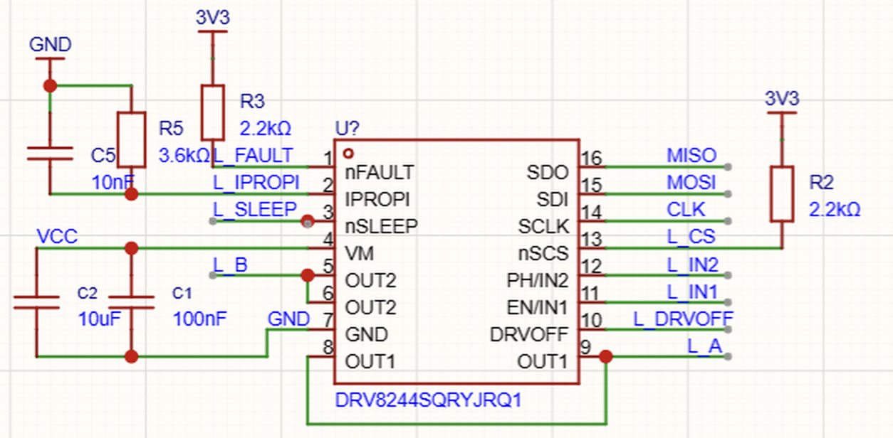
부품 선정 근거
| 기능 | 선정 | 근거 |
|---|---|---|
| 모터 (기존) | 12 V · 45 W · 1.2 Ω | 정격 3.8 A · 구속 10 A |
| 모터 드라이버 | DRV8244-Q1 × 3 | 47 mΩ · 과전류 21 A 이상 |
| 전류 측정 | IPROPI 3.6 → 1.5 kΩ (예정) | 측정 범위 4.4 → 10 A |
| 비상 차단 | DRVOFF 핀 | 무선 비상정지 연동 예정 |
| 조향각 | MT6701 절대각 (SSI) | 전원 투입 즉시 각도 확인 |
| 바퀴 회전 | MT6701 증분 (ABZ) | MCU 타이머 계수 |
| 제어기 | STM32 (Nucleo-64) | 핀 배정 초안 완료 |
| 구분 | 확인 사항 | 영향 | 설계 방향 | |
|---|---|---|---|---|
| 소프트웨어 | 실측 조향각 15° | 최소 회전 반경 약 2.5 m | → | 전 · 후진 전환 경로 계획 |
| 근접 시 포켓 입구 시야 이탈 | 포켓 직접 검출 불가 | → | 윗판 기반 추적 · 직전 보정 · 간격 감시 | |
| 하드웨어 | 기존 제어기 | 릴레이 On/Off 제어만 가능 | → | 자체 구동 보드 (속도 · 조향각 제어) |
| 상단 카메라 장착 | 삽입 마지막 약 0.25 m 관측 불가 | → | 캐리지 하단 장착 | |
| 무압축 깊이 영상 | Wi-Fi 실시간 전송 곤란 (약 200 Mbit/s) | → | 차량 내 기록 · 상태만 전송 · 독립 비상정지 | |
| LiDAR 높이 1.05 m | 그보다 낮은 바닥 장애물 감지 불가 | → | 운용 가정으로 명시 · 현장 조건 확인 |
소프트웨어
개발 계획 · 시뮬레이션 환경
팔레트 인식 · 삽입 중 포켓 추적
위치 추정 · 장애물 지도 · 경로 계획
접근 시나리오 A–D 반복 평가
실물 센서 · Jetson 연동
실차 위치 추정 · 실물 팔레트 인식
실차 전체 임무 A → B · C · D
하드웨어
부품 선정 (센서 · 컴퓨터)
차체 입고 · 실측 · 기존 제어기 분석
구동 보드 설계 · 모터 전류 실측
구동 보드 제작 · 속도 · 조향 제어
센서 장착 · 캘리브레이션 · 시험 팔레트
실차 반복 시험 · 가정값 실측 교체
공통
최종 시연 준비 (15주차 가정)
소프트웨어하드웨어수행예정중간 미팅 (10/14)시험 기간
| 구분 | 질문 |
|---|---|
| 여쭐 사항 | 오늘 보여 드린 운반 임무가 실제 작업 흐름과 맞나요? |
| 하역 오차와 삽입 깊이는 어디까지 허용되고, 삽입 직전 정지와 틸트 없는 운반도 괜찮나요? | |
| 포크 높이를 정밀하게 맞춰야 하나요? 허용 오차는 어느 정도인가요? | |
| 현장에는 지게차가 동시에 몇 대 투입되고, 이를 관리하는 중앙 서버가 있나요? | |
| 정해 주실 사항 | 팔레트와 목적지 위치를 미리 알려 주시나요, 로봇이 직접 찾아야 하나요? |
| 실내인지 실외인지, 통로 폭과 바닥, 장애물과 작업자 동선은 어떤가요? | |
| 저희가 정한 팔레트 규격(EPAL 6, T11 0.6배 축소판, 적재 10 kg 이하)으로 개발과 시연을 이어가도 될까요? | |
| 시연은 어떤 코스와 환경에서 진행하나요? | |
| 원격 정지는 어느 수준까지 필요한가요? | |
| 요청 자료 | 작업장 도면, 운용 영상, 사용하는 팔레트 도면을 받을 수 있을까요? |
LiDAR SLAM 선정 근거
| 항목 | 2D LiDAR (선정) | 카메라 (비전) |
|---|---|---|
| 측정 거리 | 0.2–12 m | 0.2 m–3 m 이상 (조명 조건에 따라) |
| 시야 | 360° | 전방 87° × 58° |
| 취약 환경 | 긴 복도 · 넓은 개방 공간 | 무질감 벽면 · 저조도 · 반복 패턴 |
| 지도 | 2D 점유 격자 → 경로 계획 직결 | 특징점 지도 → 격자 별도 생성 |
| 연산 | CPU 전용 (소형 보드 가능) | GPU 권장 · Orin Nano는 저해상도만 안정 |